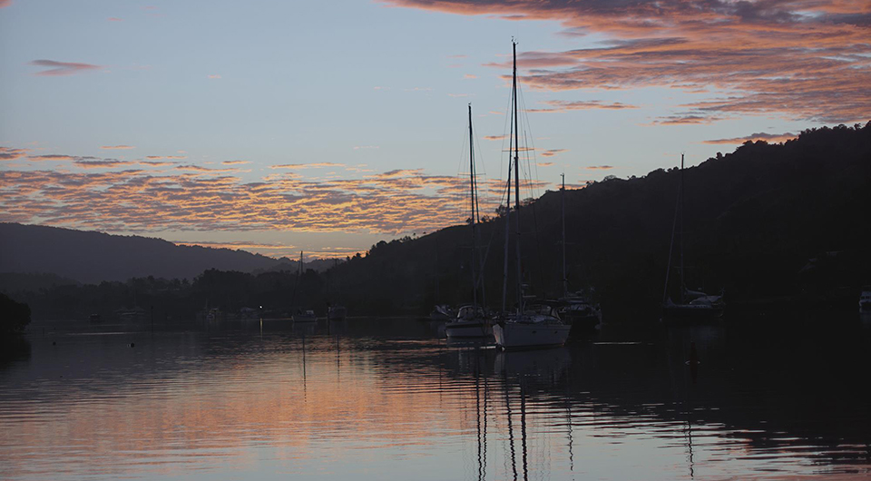
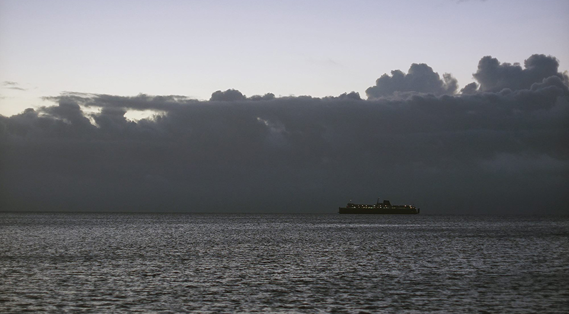
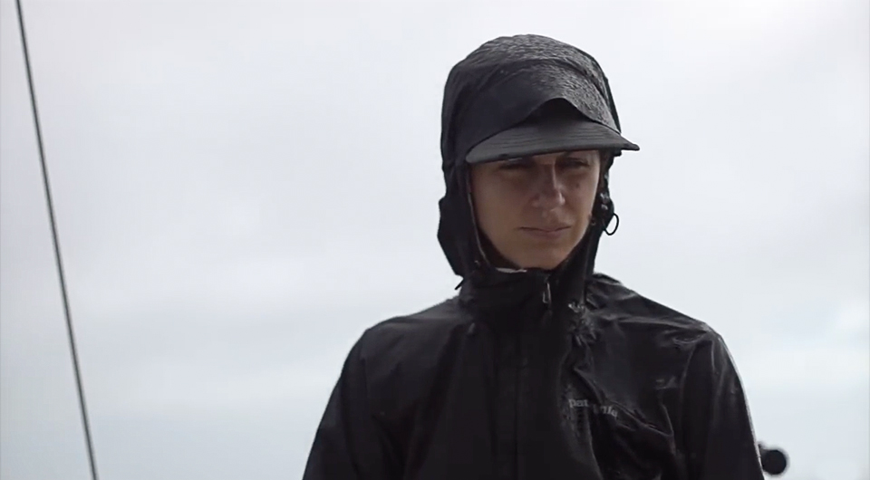
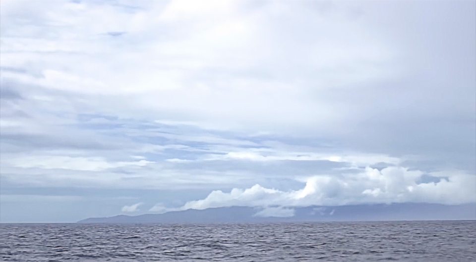
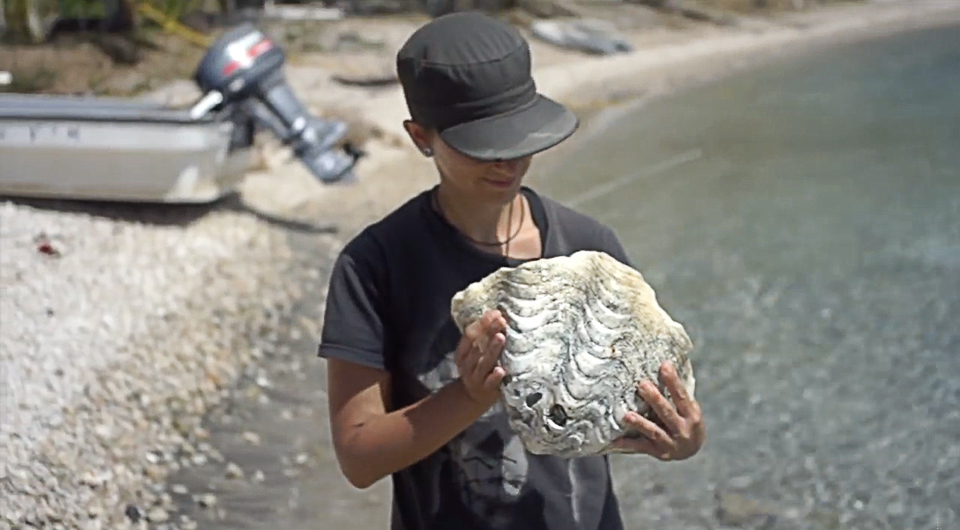
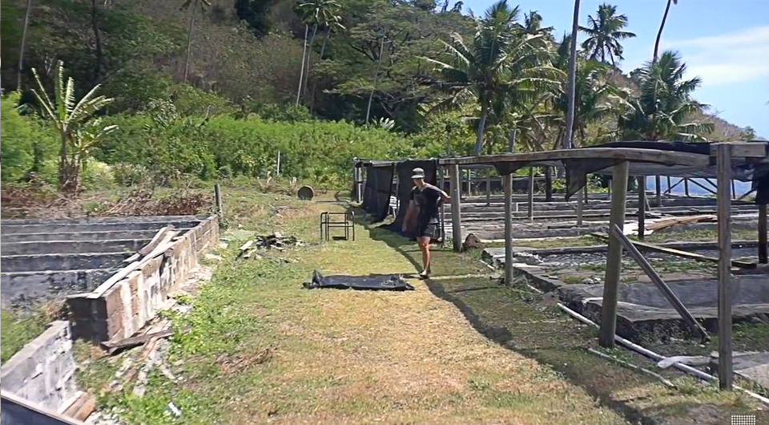
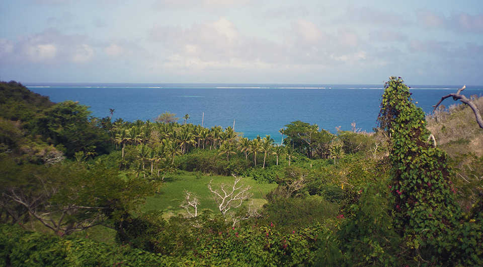
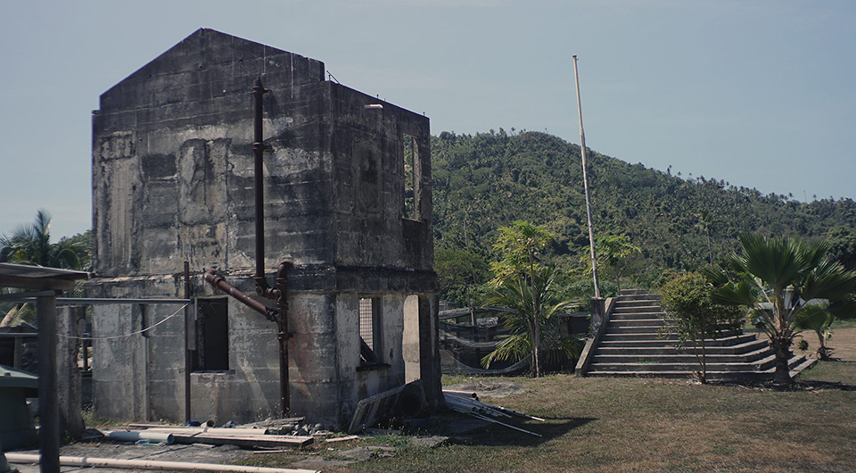

where is the turtle farm
- Our time in makogai
- Goodbye windlass
- Pino sails to Makogai
- Sevusevu
- An island without a chief
- The internet bench
- Gin? Gin!
- The dinghy problems begin
- The gluing of the seams
- Weve got an Iggy problem
Our time in makogai
Pino spent a long time in Savusavu, but by then, we were growing tired of this scenery, not of the market, or of the company to be found here, but just of having that same view every morning. We love this city, but when it's time to go, it's time to go!
We left our mooring at 9am, and moved along over to Cousteau's resort to anchor (16 48.623S, 179 17.331E). The water was unclear, and the clouded sky made it difficult to see bommies beneath us. Devine dove in and checked out our anchor, which was set in sand, and we weren't near any huge coral that we could see, that is, unless the wind shifted - it was hard to see that far in cloudy water to be honest.
SV Privateer arrived shortly after us, having made the short passage by sail, we saw them manoeuver around, looking for a place to drop the hook.

- 'What's the bottom like?' Lila shouted, baby Chance strapped to her back.
- 'Sand. A few bommies!' I shouted back.
They hovered around some more, opening the headsail, furling it, in and out again, and moving the main in and out to make their way around the anchorage. It's always impressive to watch, not many will rely on wings alone to do this. They'll do as many tacks as necessary to get where they need to go - engines be damned!
We tried swimming at the beach that afternoon, but it was full of seaweed and unclear, we much preferred staying on the tiny slab of beach lining the shore to watch the hundreds of tiny hermit crabs moving about. They were different sizes, wearing a grand variety of shells - some spirally, others conical, stained with purples and whites, oranges and cream. We sat there in silence, listening to the sound of their shells rubbing against bits of broken coral. Such a pleasant sound, small scratching noises. Crkk, crkk... crkk.
- 'Move along little ones - move along now! Tide's rising!'
We left our hermit crab friends behind, and went back aboard Pino. Tomorrow morning we had to get up at 4am to sail to Makogai (pronounced ma-kon-guy), 49NM away.
The wind changed in the night, we could hear the chain rubbing against bit of coral, catching, before coming off again with a jerk, the sound traveling to us by the chain through the hull. We should have probably buoyed the chain, we thought then, but it was dark, and too late to think of doing this now. Hopefully, the chain wouldn't have this macramé thing going on with the bits of coral down there.
Goodbye windlass
We awoke to a dark night, the alarm ringing at 4am, as planned, and realized then that our windlass didn't work anymore. I recently undid the connections to clean bits of rust off, I thought maybe I didn't put them back in right, when I went inside to check everything was good and tight, but something was wrong with the windlass motor: a screw was sticking out of one end.
- 'That - is not good.'
I reached for it, and was able to pull it out with ease, it was a long screw, attached to some thin metal rod, which had cracked off of something. I've little experience with this and could see the connections were good yes, but the motor was not- definitely not, bits of metal aren't supposed to crack off, that I was certain of. There is power, solenoid is good, but if we try and work the switches all we hear is this dull mechanical sound.
Luckily, we make a point of always anchoring under 40 feet, and we haul the anchor up by hand most times. Devine was able to get the anchor out, happy to see the chain wasn't stuck in coral after all. We motored off, since the wind was mostly dead - although I feel Privateer somehow would have found puffs of air to do it - and went out of the reef. There was a bit more wind outside the protective belt of shallows, and after raising the main and unfurling the jib we sailed on forward - slowly, but forward.
Pino sails to Makogai
We had much rain, in fact, it started to pour everytime I put my hand on the tiller. Rekka, rain magnet extraordinaire.
When the sun came up, the clouds too, dispersed and disappeared, both of us boiled under it, reddening in the fews places we'd forgotten to protect, like, behind the knees, or in the gap of skin where the shirt ends and pants begin - oh, and the tops of our fingers too.
We arrived to Makogai just around 2h30pm, and entered using the western passage.
Waypoints:
Entrance to pass 17 26.824'S 178 54.555E
Mid pass 17 26.921S 178 54.927E
Anchor spot 17 26.480S 178 57.201E (~35feet).
We found a spot, our anchor set down there well enough, few small corals, but one especially large one lay right behind us everytime our boat would swing to the north. It was deep enough, and the prevailing winds kept us off it most times, there was no danger of our chain snagging in it either - all good! We wanted to anchor right of the pier, in shallower waters, at first, but there was a mooring there so we didn't try.
I was excited to be here, because I'd read they were raising giant clams, and there was a turtle breeding centre - a turtle farm! If you've read my other blog entries, you know how excited we get about turtles.
Tur-tle farm! Tur-tle farm!
Sevusevu
Tired and sun-baked, we went to bed early. We knew we'd have to go ashore to do sevusevu, a practice done in all of the Fijian villages here, that consists of presenting a yaqona root to the chief and of taking part in a kava drinking ceremony. Sevusevu is a way of welcoming you to the island, this is how the chief gives you permission to anchor here, and to walk on the island. For the ceremony, the chief pounds the dried kava root into a fine powder, straining and mixing it with cold water. The chief will recite some text in Fijian, then cups his hands, claps three times and begins to serve the grog. The grog is drunk from a bilo, a half-shell of coconut. Everyone in the room takes part in this.

We decided we'd go and do sevusevu, and the turtle farm visit, tomorrow morning instead, don't think we could have survived an evening of Kava.
The next day, I brought Iggy back to life, and Devine and I decided to row it to shore. Neither of us felt like putting the outboard on, we needed the exercise anyway, so we each grabbed a paddle and off we went! I was carrying our gift of yaqona root in a bag. The sailboat Scoots was anchored in deeper waters behind us, and came powering in with their dinghy, asking if we wanted a tow to shore. We figured why not - to hell with exercising, it's too damn hot anyway and we're crispy enough as is. We threw them a line so they could pull us along.
Just off the pier, there were 3 Fijian men working hard on a project. They were building additional concrete basins for their clam operation. Makogai has a giant clam farm, these mollusks are endangered - because that's what ALWAYS happens when humans decide animals are delicious. It's a shame really, considering they're centenarian creatures. It's also sad to think that if they're numbers go up, people will almost certainly start eating them again.
The locals here in Makogai grow them in basins, with water pumped up into the long concrete basins from Dalice Bay using pumps through long pipes. When big enough, they carry the clams back out to the water. These things can grow absurdedly large, up to 129cm across, and and can weigh up to 200kg! We stared at them, bathing in the basins, they stared back at us, grin creepily with their undulated lips.
Devine neared one of the locals, to ask THE question, the only one that matters...
- 'Where's the turtle farm?'
The local shook his head.
- 'No more turtle farm.'
Heartbreaking.
- 'What? Aw! Nooo-'
So that's that. No turtle farm today, not ever.
An island without a chief
Vandy and Eric from SY Scoots had been to Makogai for about 5 days, they pointed out the person we would need to talk to for sevusevu. The man was working on the concrete basins, shiny with sweat, he walked over, and welcomed us to the island.
- 'Bula! Bula!'
- 'You're the chief of the village?' we asked.
- 'No, no-' he said, shaking his head.
- '-no chief here, not anymore, but I will speak for the island today. I will do your sevusevu. Follow me, we will do it over there.'
The man was in work clothes, speckled with grey stains from working with cement, he had little teeth in his mouth, but smiled a whole lot. He brought us to a shaded area, under a set of covered roofs, with a black sheet of fabric laying on the ground. We arrived there, and he took a seat on the sheet.
- 'Sit, sit - please!'
- 'We keep our shoes?'
We asked, determined not to offend him, or anyone else here.
- 'Shoes are ok, hats are ok, everything is ok! Please sit. You have camera?'
- 'Yea, we've got one.'
We said yes, although this wasn't exactly picture-worthy, and had no plans to take any shots. Already then, we knew this wasn't going to be a proper sevusevu, this man, and the others around, were too busy today to do it.
We took a seat, and handed over the yaqona root. The man took it, and began to recite the traditional monologue, it ended with a chant, and three claps.
CLAP! CLAP! CLAP!
We understood nothing of course. The man could have been saying complete gibberish for all we knew.
- 'Turtle beard, turtle beard. Glamour pickles, nubs, glassy and dressy. A poultry feeling, triangular trouts at the gathering of the goose. Bright blubbery bits.'
Bright blubbery bits everyone. Bright, blubbery, bits. Cobo 3 times, drink the grog.
We sat there, as the man did his thing, in his tattered clothing, pretending to have a bilo in his hands, knocking on the ground 3 times. All in all, we sat there for 5 minutes.
- 'You are now welcome to the island! Yes, yes, welcome! There is nice walk that way, leading to a school.'
The internet bench
We thanked him, and then we were off, eager to stretch our legs! About 20 minutes into the walk, we heard a 'hello!' over our heads. Vandy waved at us from a high perch, standing on a ledge overlooking the foot path.
- 'Want some internet? Here's the only place you can get it.'
Devine and I moved over to check it out. We climbed off a muddy slope, and arrived to a place with a ratty-looking bench, and white ash everywhere on the ground beneath it.
Eric was sitting on the bench, eyes on his cell.
- 'Welcome to the internet bench!'
Here, was the only place near our anchorage that offered a good signal, you get it from a tower on an island just south of here (Wakaya island). We've tried elsewhere, and nope! Want to tweet? You have to go for a 15 minute jungle walk, then climb up a small slope to do it. This is no worse than us raising the phone up the mast with a halyard, for a better connection.
We hadn't brought our phones, because we didn't expect to find a signal anywhere on the island. No matter, this was a vacation of sorts, a vacation away from internet. Together, we walked down the path leading to the school, some ways away. Vandy would pause ever now and then, binoculars at the ready.
- 'Hear that?'
I listened. A bird, with a distinct sound, not anything ive heard before.
- 'Been trying to spot it since I've been here.'
We never did find out which bird made that sound, it eluded us, hiding in the foliage and moving whenever we came near. We did see many little lizards though, scurrying away as we walked past, taking shelter in the bush. We saw other abandoned buildings from the former leper colony, apparently they kept the chinese, indo-fijians and fijians lepers apart, and the women from the men too, which explained why there were so many buildings scattered about. Crazy to think that even in times of disease, the segregation of people is still a thing.
We didn't make it to the school, it was too hot out, and it was nearing lunchtime. The four of us made our way back to our dinghies.
- 'You want to come over for Gin later?'
Vandy offered. We will never, ever, refuse such an offer, especially if it means we can get cold drinks! Ah! Ice. A thing of luxury. Vandy and Eric make their own gin, using cheap vodka, and adding juniper berries, coriander seeds, lime zest and cardamom pods. It's brilliant. It also works to make cheap gin, into better-tasting gin!
Gin? Gin!
Ingredients:
5 TBSP Juniper berries, 2 TBSP whole coriander seeds (crushed), 4 cardamom pods (crushed, add 1 per day) and about 2 TBSP of citrus zest.
Instructions:
Full recipe calls for 1.75L bottle of vodka plus another bottle large enough to hold the infusion, and eventually the entire 1.75L of gin. Crush the coriander, zest the lemons or limes. Add all ingredients except cardamom pods to half of the 1.75L of vodka. Add Cardamom pods, crushed, a day later. Let sit for 6 more days. Strain through a coffee filter, or other material to remove solids. Add remaining vodka, the gin won’t be clear, but it tastes fine! You can also do this to cheaper gin, to make it into super tasty gin!
- 'SO for tonight - say, 5' oclock? Gin o'clock?'
- 'YESSSS! Works for us!'
The dinghy problems begin
Scoots offered to tow us again, and once more, we said yes. But when they pulled us this time round, I heard a a loud POW sound. Then, the tube I was sitting on began to deflate.
- 'Uh oh.'
Devine looked at me, noticing I seemed to be fusing with Iggy, getting lower and lower, and nearer to the water with every passing second.
- 'Iggy's looking a little flat.'
Devine noted. I tried to sit 'less' on it, leaning in the middle instead. We arrived then on Pino, my side near flat. We climbed onto the big boat, thanked Scoots, and then watched Iggy continuing to lose air while in the water. We were glad then that we didn't try to put the outboard on, that would have made Iggy lose air a lot quicker, not to mention, it puts the outboard at risk of taking on water. It's hard to sink an inflatable, even a deflated one, but still, having an outboard, and us in it probably wouldn't have helped much.
We pulled Iggy up on deck, to try and find the problem. It was clear to us then, there were no holes, but the seams had come apart in a few places. The glue had gone - from UV exposure we think - and the strain of being pulled by Scoots ripped them open - the final blow. Our dinghy is PVC, it was an inexpensive Plastimo dinghy that we got back in BC. It probably would have faired well enough if we'd stayed there, but no, we've been sailing in warm areas and this model just wasn't built for it. Our budgets at the time, didn't permit us to get a Hypalon dinghy, also, we just didn't think there was that much difference between the two materials. Inflatables look damn sturdy when new, hard to imagine seams coming apart, they look indestructible.
Our Iggy did not look so indestructible now, poor thing.

The gluing of the seams
I lost the original patch up kit from Plastimo, on a bumpy dinghy ride in San Francisco. We'd found a backup kit in a used yacht gear shop in Alameda, that came with a brush, patches and glue. I found the kit, but the glue was just a white tube, with no instructions what-so-ever - great. I've never done a repair like this before, and we don't have the internet to turn to for tutorials. I just went ahead, cleaned the area, and tried to glue the seams as best I could.
Then, I let it dry, and later tried sitting on various places to see if more air would escape. It seemed good, and we took it for a ride to shore to test it, no problem still, but I brought the patch-up kit and air pump just in case. We went for a short walk on the beach with the intention of bringing Iggy up to a diving spot, near giant clams some ways away. After our walk, we returned to the dinghy to find one side had collapsed again.
- 'Damn it Iggy!'
We put Iggy back in the water, and pumped air back into the tube, and sat in the center, with Devine sitting on the backboard at the stern. We did our best to avoid sitting on the tubes themselves to discourage the air from coming out again. We were rowing to Pino, with air gradually leaving the tubes. Devine was trying to row an inflatable with broken oar locks forward, while I was busy pumping more air into Iggy as we went along. Our dinghy has seen better days. For a moment I feared we'd have to swim back to the boat, Iggy in tow, but we made it back, and again, watched as our inflatable friend lay limp in the water, like an old, disused, party balloon.
The glue did work in some areas, but seeing as how there were no instructions on the packaging and that we didn't have internet I couldn't be sure if i'd really done it right. We pulled Iggy back up on deck, and rolled it up. It didn't look like we'd be doing any trips back to shore, shame, really did want to see those giant clams in the water. Also, Scoots was anchored much further down, in deeper waters, don't think Iggy the dinghy could make that trip.
Devine called them on the radio then.
Weve got an Iggy problem
- 'Hey, we've got a bit of an Iggy- uh, dinghy problem. Think you could come and pick us up later?'
- 'Sure, sure! Sorry to hear about your dinghy.'
Later, around 5'oclock, Eric came to pick us up in a large dinghy and matching 15HP outboard. Getting into a dinghy like that is a lot of fun, it has a hard bottom, lots of power and will definitely get you places fast!
- 'You want to see fast?'
Eric said with a grin, right before we pushed off Pino at incredible speeds.
I laughed, as we powered along. Speed always makes me laugh, it's an uncontrollable sort of laughter, a mix of joy and fear. We saw Pino get small, real fast, and Scoots got big, real, real big, real, real fast. The boat is 50 feet, and damn gorgeous.
We had a lovely night, always great to meet fellow cruisers, everyone is just so different and lovely in their own way.
We were leaving the next day, Vandy radio'ed us early in the morning, just a quarter to 7.
- 'I've packed up some Juniper berries for you! How do I get em to you?'
- 'OH! Wow thank you! I guess we can just pass real close on our way out and you can toss it over?'
- 'Yea we'll try that, I'll try to weigh it down with something so the wind doesn't catch it.'
- 'Sounds good, see you then.'
Surely enough, 15 minutes later, we motored past, and Eric threw a generous bag of juniper berries. It landed on the dodger - good aim!
- 'Catch you out there!'
We shouted. Eric had a large shell in his hands, and blew hard into it. FUUUUUMP! A way of bidding us farewell. We'd noticed then that another yacht we'd met yesterday had drifted way back into the anchorage. The wind had picked up in the night and they'd dragged anchor, luckily, the water in the entrance was shallower and their anchor got caught in it.
We'd heard the sound of a horn, late in the night, but didn't know what it was and our tired minds did not think of looking to find out its source, or why it had been sounded in the first place.
We motored past the boat on our exit.
- 'Morning! You guys okay?'
- 'Yes yes!' they said.
It was hard to hear them, because of the wind.
- 'Did you *something something* horn last night?'
I thought they'd asked if we had HEARD the horn, and so I answered:
- 'Yes!'.
I said this, thinking she'd explain, because I too wanted to know what that was about!
- 'Thank you so much!' they said, smiling.
Woops, I realized my mistake then. They probably asked me, if we had sounded the horn last night, and I'd taken credit for it. The story was that Scoots, kept anchor watch at night, when the wind picked up, and they saw the boat was further away in the anchorage. Scoots blew the horn in the night, so they would hear, and maybe find out that they had moved some ways away from their original location. When you're far away, and no radio contact, this is a good way to wake people up.
Very happy to say that we didn't move at all in the night, we have our new heavier anchor to thank for that.
We hoisted the sails, and Pino moved out of the reef, heading southward, towards our destination: Leleuvia, a small island south of Ovalau.
If you like our content, consider supporting us on...
PATREON